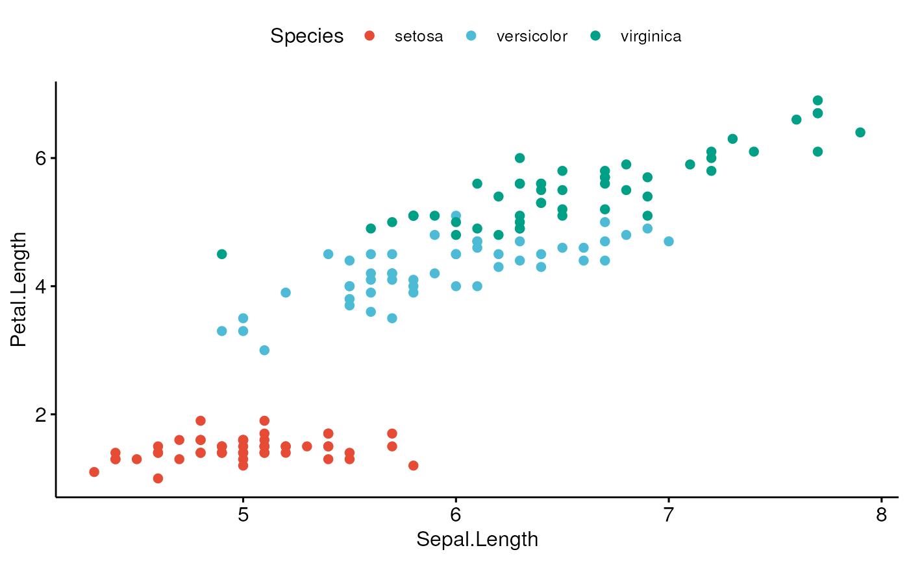

Generate Color Palettes
get_palette.RdGenerate a palette of k colors from ggsci palettes, RColorbrewer palettes and custom color palettes. Useful to extend RColorBrewer and ggsci to support more colors.
get_palette(palette = "default", k)
Arguments
| palette | Color palette. Allowed values include:
|
|---|---|
| k | the number of colors to generate. |
Value
Returns a vector of color palettes.
Details
RColorBrewer palettes: To display all available color palettes, type this in R:RColorBrewer::display.brewer.all(). Color palette names include:
Sequential palettes, suited to ordered data that progress from low to high. Palette names include: Blues BuGn BuPu GnBu Greens Greys Oranges OrRd PuBu PuBuGn PuRd Purples RdPu Reds YlGn YlGnBu YlOrBr YlOrRd.
Diverging palettes:Gradient colors. Names include: BrBG PiYG PRGn PuOr RdBu RdGy RdYlBu RdYlGn Spectral.
Qualitative palettes: Best suited to representing nominal or categorical data. Names include: Accent, Dark2, Paired, Pastel1, Pastel2, Set1, Set2, Set3.
Examples
data("iris") iris$Species2 <- factor(rep(c(1:10), each = 15)) # Generate a gradient of 10 colors ggscatter(iris, x = "Sepal.Length", y = "Petal.Length", color = "Species2", palette = get_palette(c("#00AFBB", "#E7B800", "#FC4E07"), 10))# Scatter plot with default color palette ggscatter(iris, x = "Sepal.Length", y = "Petal.Length", color = "Species")# RColorBrewer color palettes ggscatter(iris, x = "Sepal.Length", y = "Petal.Length", color = "Species", palette = get_palette("Dark2", 3))# ggsci color palettes ggscatter(iris, x = "Sepal.Length", y = "Petal.Length", color = "Species", palette = get_palette("npg", 3))# Custom color palette ggscatter(iris, x = "Sepal.Length", y = "Petal.Length", color = "Species", palette = c("#00AFBB", "#E7B800", "#FC4E07"))# Or use this ggscatter(iris, x = "Sepal.Length", y = "Petal.Length", color = "Species", palette = get_palette(c("#00AFBB", "#FC4E07"), 3))